Exercises in Typographic Style (EiTS) is a typographic
bookwork created in response to Raymond Queneau’s
Exercises in Style, a book with a single story told 99
different times in different writing styles.
The aim of EITS was to explore the extent to which a narrative
could vary via changes made souly to the visuals, layout, &
typography, as opposed to the changes in writing style seen in the original work of Raymond Queneau.
To do this, I created a (very) short story (158 words) & typeset it in 65
different ways. Some of these specimens vary drastically—with words emphasized in colorful, expressive ways . . .
Some morphing into typographic posters:


while others remain simple, with differences
one might not even notice at first glance:
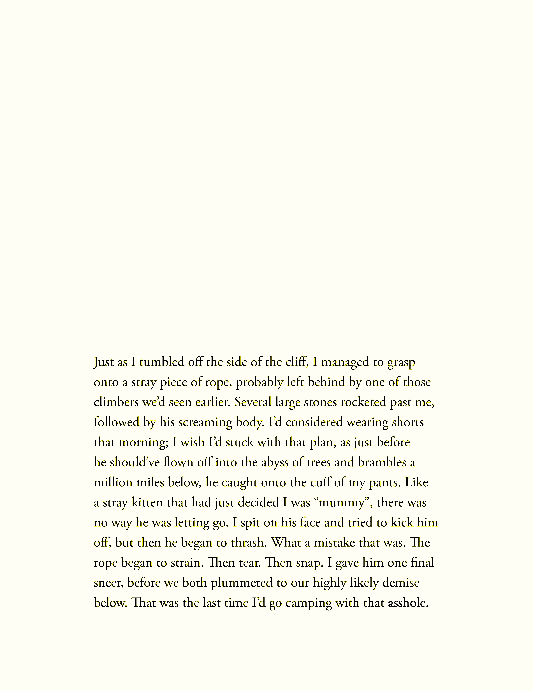
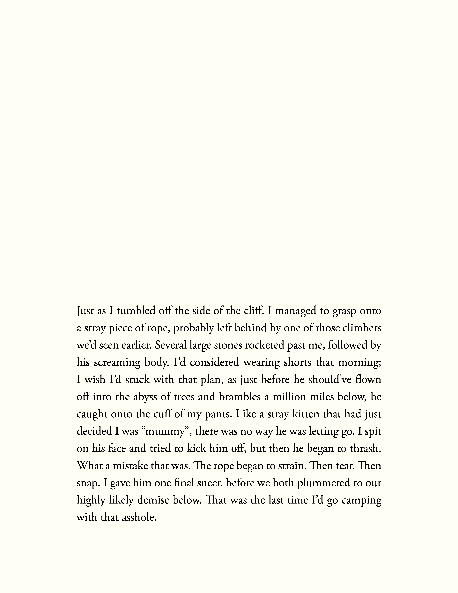
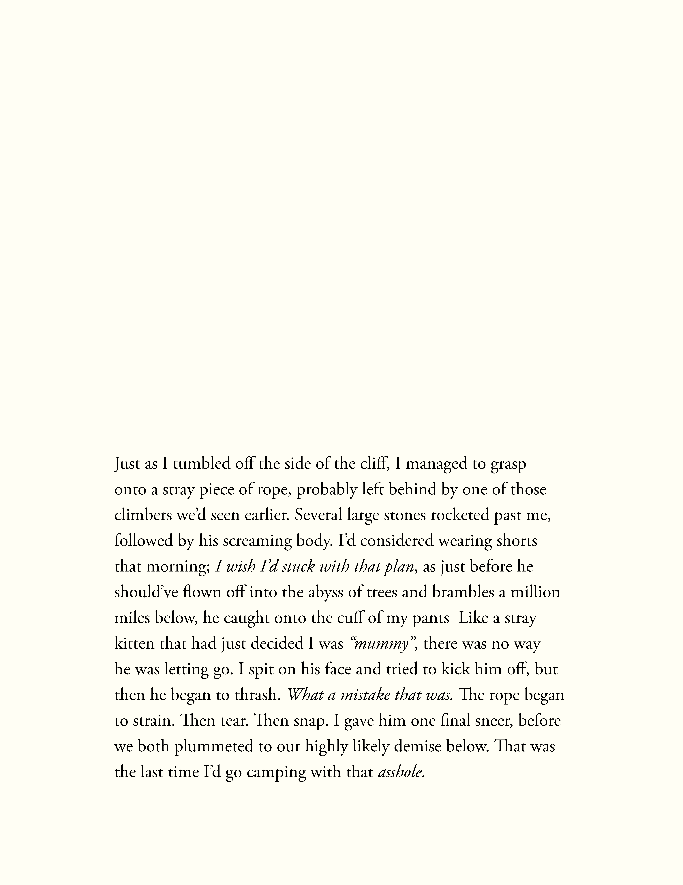
The goal of this project was to show that the
layout of a text is not unimportant, and, in fact,
can completely alter the way readers perceive a
given piece of writing.
The goal of this project was to show that
the layout of a text is not unimportant,
and, in fact, can completely alter the way
readers perceive a given piece of writing..
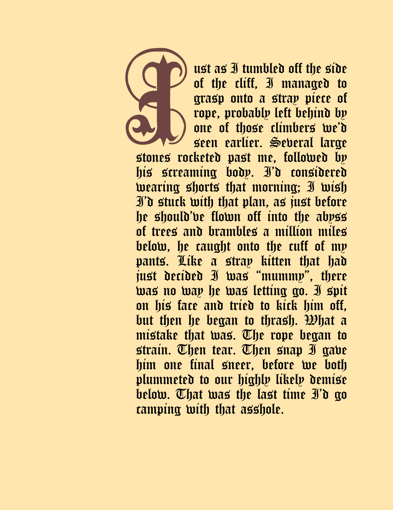
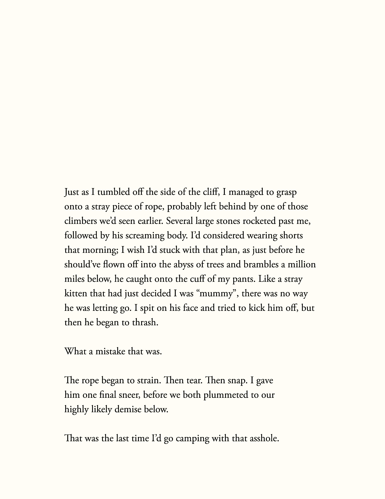
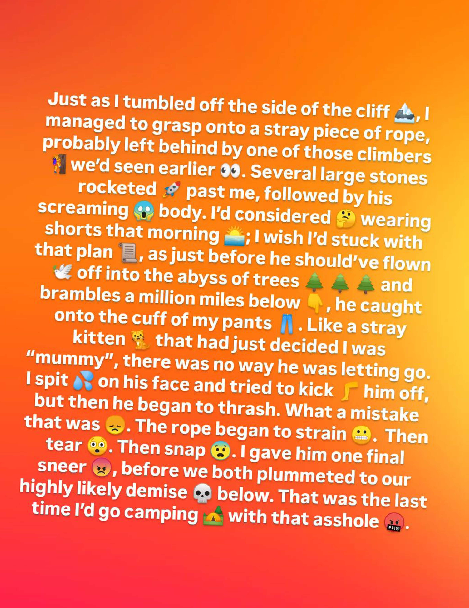
A bound book suggests order—as would be
expected for a narrative. However, since the
goal of EiTS is the comparison of these different
typographic presentations with one another, having an
order would be counterintuitive. As such, the text is
presented in an unbound format, in a hand-made clamshell
box, which allows for the easy cross-comparison of the
works against one another.
Black fabric was chosen for the box, as it had an element
of neutrality to it; displaying any typography on the cover
would’ve created created an unintended message—the
cover remains as neutral as possible, while the contents
contain all the meaning. The book also possesses
swappable covers, which allows a reader to dictate their
own presentation of the object. Theoretically, one could
even make their own.
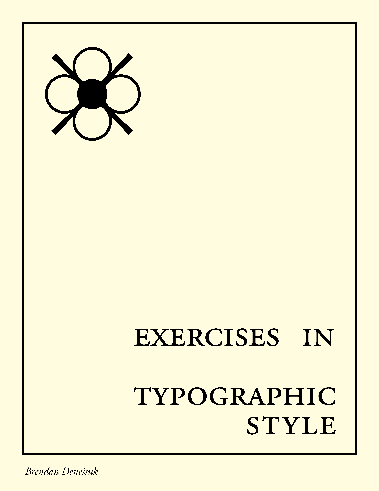
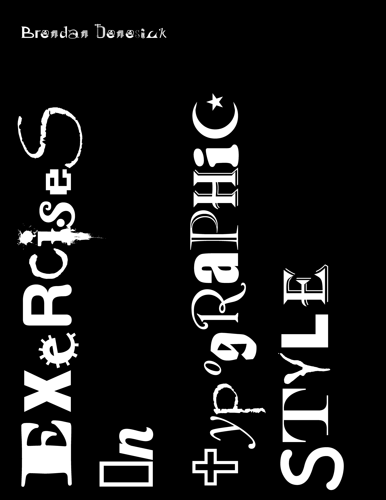
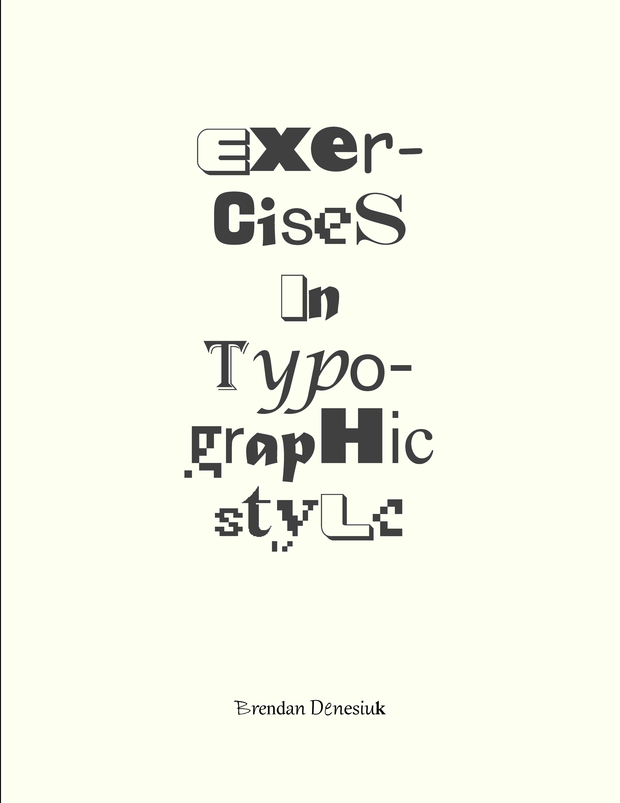
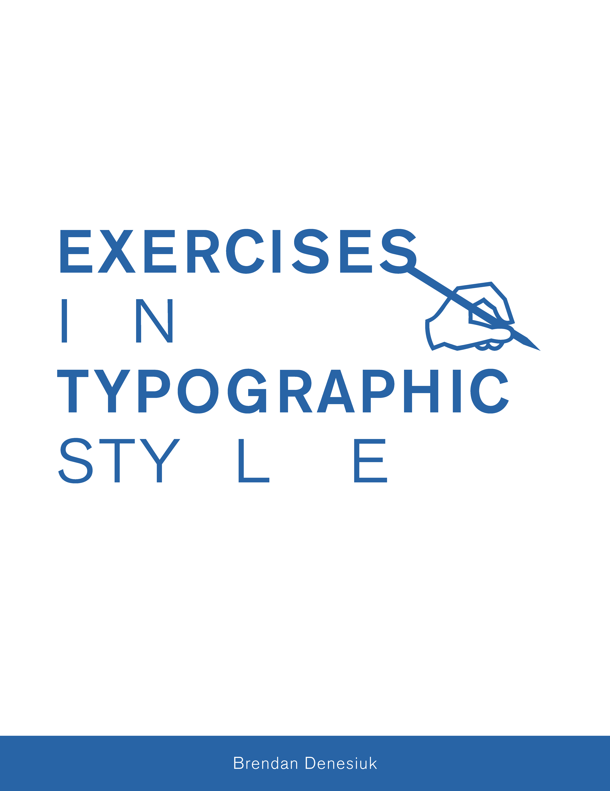
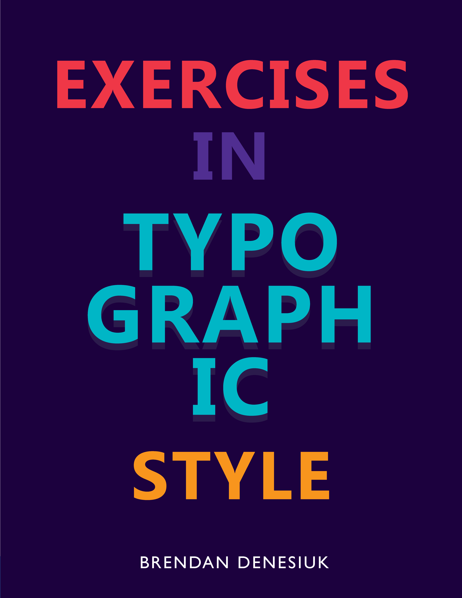